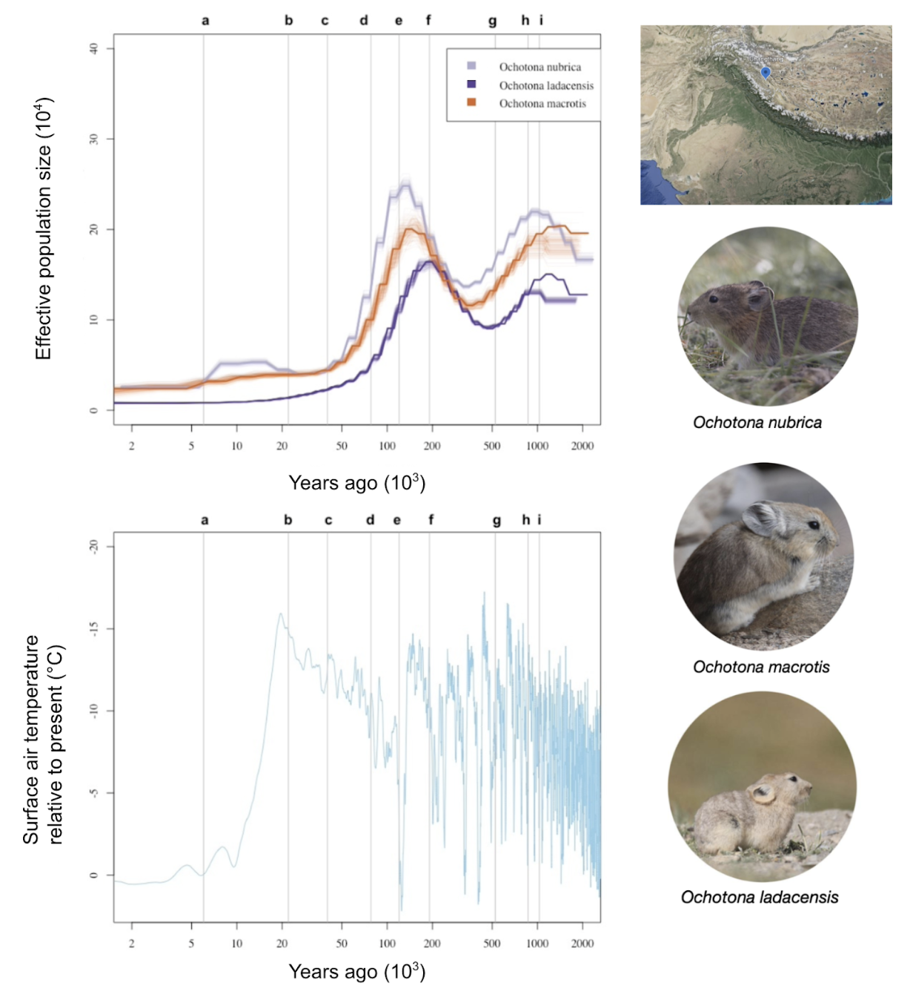

Understanding how species have responded to climate change in the past—especially during the Pleistocene—can offer valuable clues about how they might respond to future climate shifts. Pikas, as cold-adapted, high-elevation specialists, provide an ideal system to explore these dynamics. The elevational shift hypothesis suggests that during warmer interglacial periods, pikas would be pushed up the elevation to track cooler habitats (leading to smaller, isolated populations), while during colder glacial periods, they would expand to lower elevations, rescuing populations from inbreeding.
To test this idea, I combined two complementary approaches:
- Species distribution modeling (SDM) to reconstruct past habitat suitability across time
- Population Genomic analyses (PSMC) to infer changes in population size over evolutionary timescales
Focusing on three species—Ochotona ladacensis, Ochotona nubrica, and Ochotona macrotis—from the Changthang Biotic Province on the Tibetan Plateau, SDMs showed that suitable habitats were most extensive during the Last Glacial Maximum (LGM ~20,000 years ago) and most restricted during the Last Interglacial (LIG ~120,000 years ago). Additionally, the most suitable habitats for these species were found at lower elevations during the LGM and at higher elevations during the LIG. These findings align with the elevational shift hypothesis: pikas were found at lower elevations during colder periods.

Figure 1: Habitat suitability maps across different time slices
However, the genomic data paints a different picture of species responses. All three species showed peak population sizes pre-dating both the LGM and LIG, around ~190,000 years ago (MIS-6), followed by steady declines through the LIG and the LGM despite the cold conditions that should have favored population growth. This contrasts our SDM results but can be reconciled with careful consideration of local geology and historical glaciation events. The Changthang region, unlike much of the world and other parts of Himalayas, experienced unique paleoclimatic and glacial histories—severe glaciation during MIS-6, a warm interglacial, and surprisingly little glaciation event during the LGM when the rest of the world was rapidly cooling. We hypothesize that pikas are likely to have been at low elevations during the cool MIS-6, driven up the elevation during the warm unfavorable LIG and continued to remain isolated there given the absence of a rescue glaciation event in this region may have low effective population sizes today as a result of historical inbreeding due to populations becoming isolated on mountain tops in the absence of rescue glaciation events.
Together, this work underscores the need to integrate paleoclimate, local geology, and population genomics when reconstructing species demographic histories. It also emphasizes that species-level models (SDMs) may not always capture responses of populations (PSMCs). A deep understanding of species responses to climate change is necessary for conservation planning and a combination of methods is likely to useful in this regard.

Figure 2: PSMCs for three sympatric species of pikas from Changthang Biotic Province